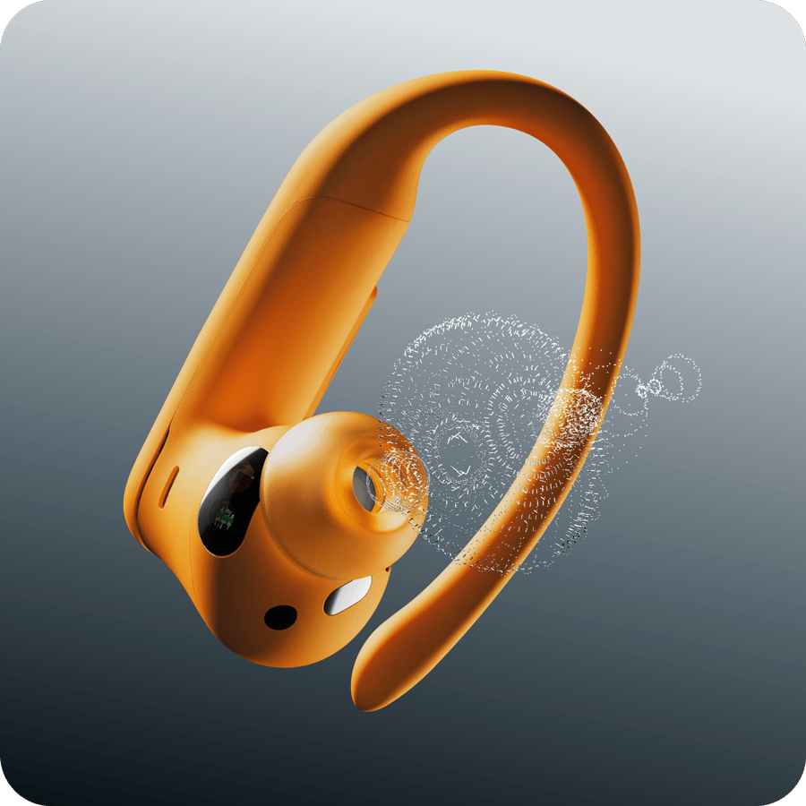
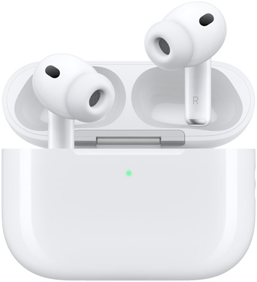
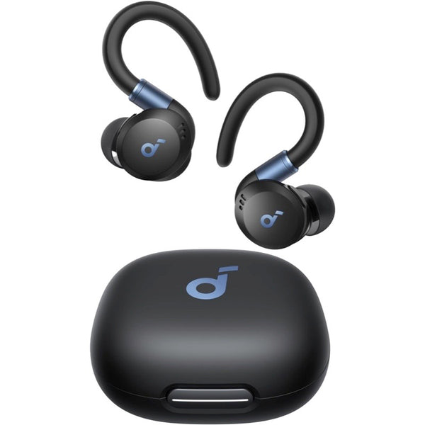
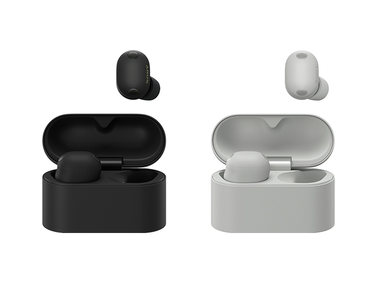
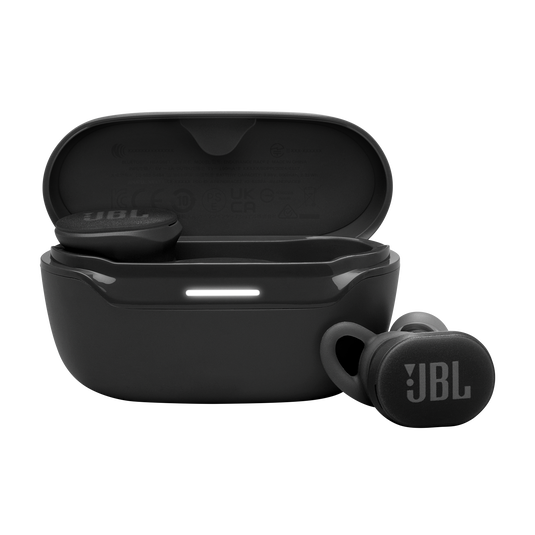
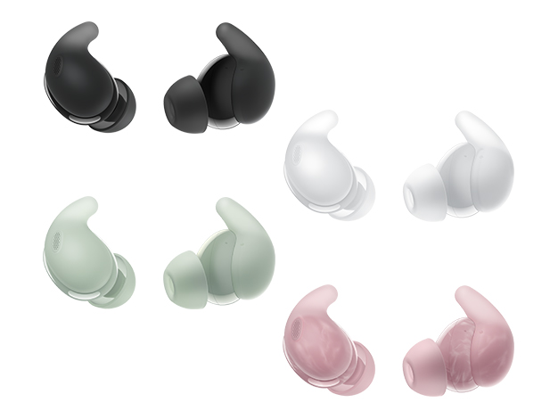
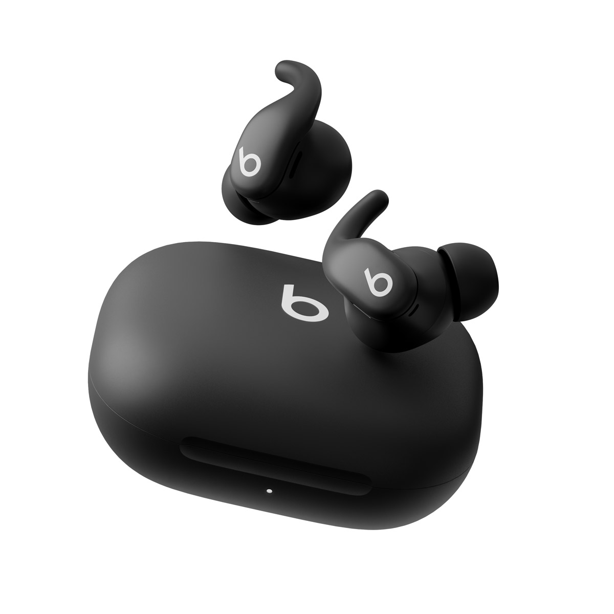
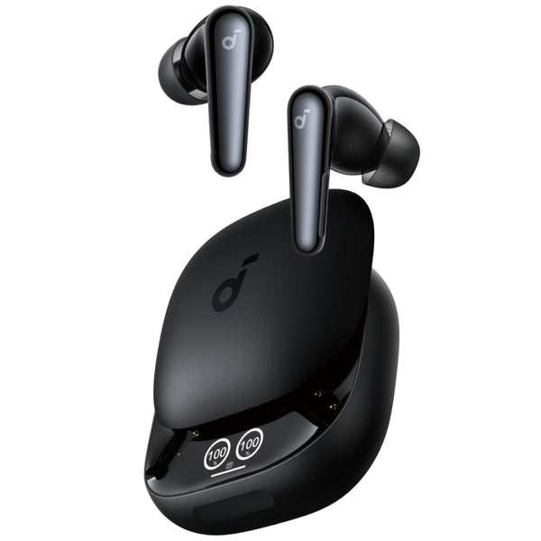

おすすめ
3機種を並べる
形の違うイヤホンを並べ、比較サイトだと伝える構成。写真の大きさと情報量のバランスを取れます。
ページ上部に置く画像の見せ方です。掲載中の商品画像で比べられるようにしました。本番のメイン画像は変更していません。



形の違うイヤホンを並べ、比較サイトだと伝える構成。写真の大きさと情報量のバランスを取れます。






掲載商品をすべて見せる構成。選択肢の多さが伝わりますが、スマホでは個々の写真が小さくなります。
耳掛け型の形をはっきり見せる構成。すっきり見えますが、その商品専用のサイトに見えやすい点には注意。